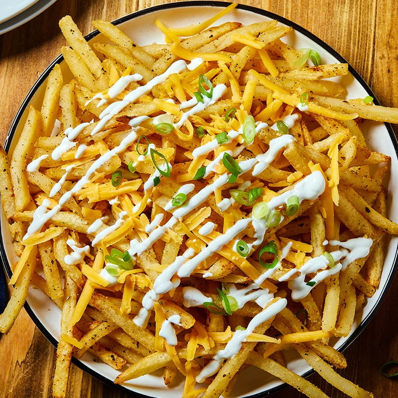
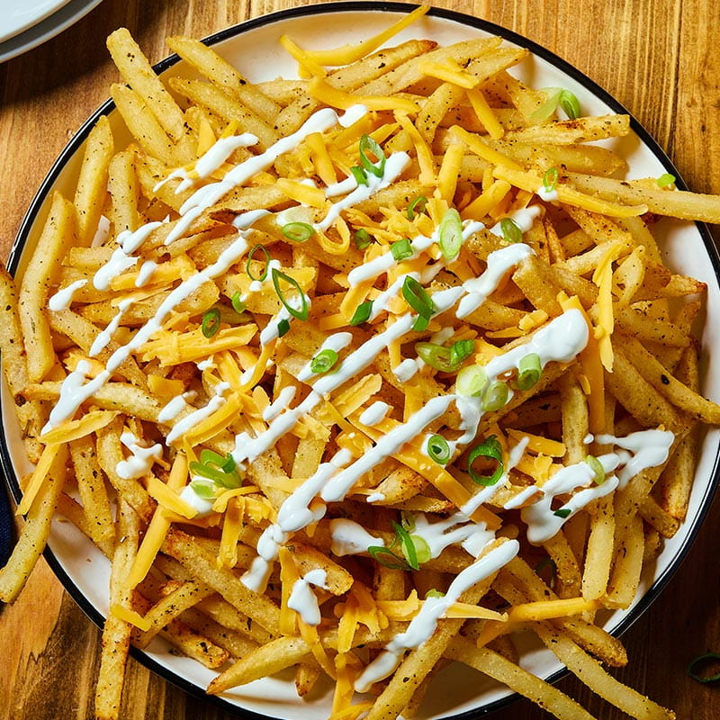

Hranolky: Křupavá Delikatesa
Hranolky jsou ikonickým a oblíbeným pokrmem po celém světě. Jsou vyrobeny z brambor, které jsou krájeny na tenké proužky a poté smaženy nebo pečeny, dokud nejsou křupavé a zlatě hnědé. Tato lahodná pochoutka je často podávána jako příloha k hlavnímu jídlu nebo jako samostatné občerstvení
Hranolky mají svůj původ v Belgii, kde se poprvé začaly vyrábět v 17. století. Od té doby se staly neodmyslitelnou součástí rychlého občerstvení a restaurací po celém světě. Jejich jednoduchá, ale přitom neodolatelná chuť a křupavá textura oslovuje lidi všech věkových kategorií.
Existuje mnoho variant hranolků, od klasických hranolků z brambor až po různé inovativní recepty, které zahrnují různé koření, sýry nebo dokonce zeleninu. Hranolky jsou rychlým a snadným způsobem, jak si dopřát chutnou pochoutku, a jejich oblíbenost se stále udržuje po mnoho generací.

 
